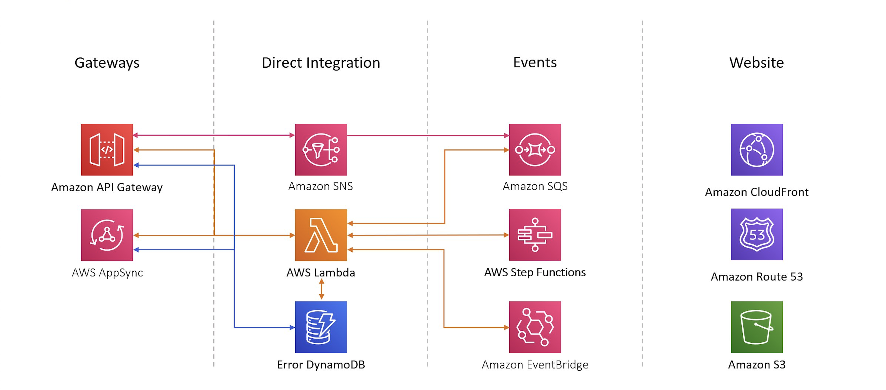

CDK Patterns is more than "just AWS CDK examples"
Check Out Our 4 Content Distribution Platforms:

Showing 16 Serverless Patterns

- Fully Open Source
- Vanilla CloudFormation Provided
- CDK unit tests for Infrastructure Provided
Inspired By 10 Pattern Creators
Backed by links to their external blogs/talks
In Real Programming Languages! (not YAML)
Unleash your inner Pythonista or embrace TypeScript. You decide.
Filled With Serverless Well Architected Learnings